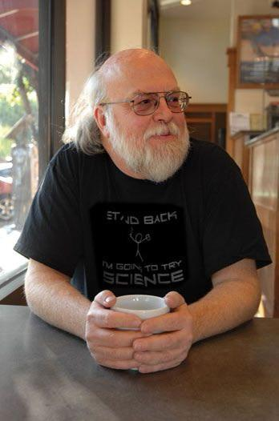

Биография.

Детство и ранние годы
• Рождение в Канаде: Джеймс Гослинг родился 19 мая 1955 года в городе Калгари (провинция Альберта, Канада) в семье фермеров. С раннего детства он проявлял огромный интерес к технике и конструированию. • Первый опыт в программировании: В возрасте 12-13 лет Гослинг самостоятельно собрал собственную цифровую систему из деталей от старых телефонных коммутаторов и телевизоров. Чуть позже он случайно попал на экскурсию в лабораторию Университета Калгари, где впервые увидел настоящие ЭВМ. Подросток настолько увлекся, что научился писать код и начал помогать сотрудникам университета, фактически получив доступ к технологиям задолго до поступления.
Образование и первые серьезные проекты
• Высшее образование (1977): Джеймс поступил в Университет Калгари, где в 1977 году получил степень бакалавра наук (B.Sc.) в области компьютерных наук. Во время учебы он продолжал активно заниматься практической разработкой ПО. • Докторская степень (1983): Для продолжения академического пути он переехал в США и поступил в престижный Университет Карнеги — Меллон (CMU). В 1983 году он успешно защитил диссертацию и получил степень доктора философии (Ph.D.) по компьютерным наукам. • Gosling Emacs (1981): Еще во время учебы в аспирантуре Гослинг написал Gosling Emacs — первую версию популярного текстового редактора Emacs для операционной системы UNIX, написанную на языке Си. Эта разработка принесла ему первоначальную известность в кругах программистов.
Создание Java и эпоха в Sun Microsystems
• Начало работы в Sun (1984): Сразу после получения докторской степени Гослинг присоединился к компании Sun Microsystems. Там он сначала занимался разработкой оконной системы NeWS (Network Extensible Window System), которая опередила свое время, но проиграла конкуренцию системе X Window. • Проект Green и рождение Java (1991–1995): В 1991 году Гослинг возглавил небольшую команду инженеров в рамках секретного проекта Green. Целью было создание программного обеспечения для бытовой электроники (например, интерактивных телевизионных приставок). Существующие языки (C и C++) не подходили из-за жесткой привязки к конкретному железу и слабой безопасности. Тогда Джеймс разработал новый язык, ориентированный на виртуальную машину. Изначально он назвал его Oak («Дуб») в честь дерева, росшего под его окном, но из-за проблем с товарным знаком в 1995 году язык переименовали в Java. • Концепция «Write Once, Run Anywhere»: Гослинг сформулировал ключевой принцип Java: «Напиши один раз, запускай где угодно». Благодаря виртуальной машине Java (JVM) скомпилированный код мог без изменений выполняться на любой операционной системе, что произвело революцию в эпоху бурного развития Интернета. Джеймс оставался главным архитектором Java на протяжении многих лет, занимая пост вице-президента и главного инженера Sun.
Уход из Sun и дальнейшая карьера
• Поглощение со стороны Oracle и уход (2010): В 2010 году корпорация Oracle официально поглотила Sun Microsystems. Гослинг был крайне недоволен новой корпоративной политикой, жестким контролем над экосистемой Java со стороны руководства Oracle и снижением его собственной роли в проекте. Спустя короткое время он со скандалом уволился из компании. • Короткий этап в Google (2011): В марте 2011 года Гослинг объявил, что переходит на работу в Google. Однако его сотрудничество с поисковым гигантом продлилось всего около пяти месяцев — позже он признался, что не нашел там проекта, который бы его по-настоящему зажег. • Исследования океана с Liquid Robotics (2011–2016): В августе 2011 года он неожиданно для многих стал главным архитектором программного обеспечения в стартапе Liquid Robotics. Компания занималась разработкой автономных океанических роботов (Wave Gliders) для сбора экологических и научных данных. Гослинг писал софт для управления этими дронами и обработки телеметрии, вернувшись к своей давней страсти к робототехнике. В 2016 году стартап был выкуплен корпорацией Boeing. • Работа в Amazon Web Services (2017 — н. в.): В мае 2017 года Джеймс Гослинг присоединился к команде AWS в должности почетного инженера (Distinguished Engineer). Там он занимается оптимизацией облачной инфраструктуры и поддержкой различных open-source проектов, связанных с Java.
Награды и мировое признание
• Орден Канады (2007): Гослинг был удостоен звания Офицера Ордена Канады — это одна из высших гражданских наград страны за выдающиеся заслуги перед обществом. • Медаль Джона фон Неймана (2015): Престижный институт IEEE вручил ему медаль за колоссальный вклад в создание языка Java и фундаментальное влияние на индустрию разработки программного обеспечения. • Членство в академиях: Джеймс является избранным членом Национальной инженерной академии США и Ассоциации вычислительной техники (ACM).